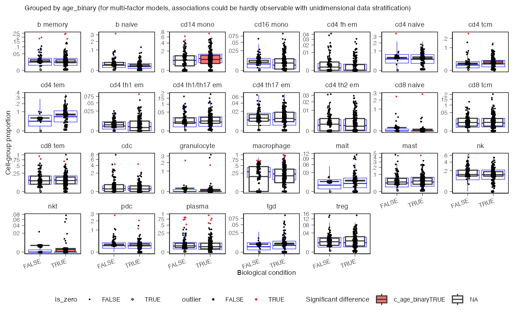

Continue from Explore and
visualise. This article answers the question: do immune cell-type
proportions change with age? Younger and older donors from the same nine
respiratory studies are compared with sccomp, accounting
for study (Mangiola et al. 2023).
Keep immune cell types only
The fit uses the immune subset of obs_lung
(obs_composition): one sample-level composition over the
immune types. Epithelial types are excluded because their capture is
driven by dissociation protocol as much as by biology, and including
them would move the denominator of every immune proportion.
obs_composition <- obs_lung |>
dplyr::filter(cell_type_unified_ensemble %in% immune_cell_types) |>
# sccomp stores covariates in one column. A logical cannot share that
# column with a character study id. "FALSE" is the reference level.
dplyr::mutate(age_binary = as.character(age_binary))
obs_composition |>
dplyr::count(cell_type_unified_ensemble, name = "n_cells") |>
dplyr::arrange(dplyr::desc(n_cells))## # A tibble: 26 × 2
## cell_type_unified_ensemble n_cells
## <chr> <int>
## 1 macrophage 196975
## 2 cd14 mono 45990
## 3 nk 37230
## 4 cd8 tem 34201
## 5 plasma 23810
## 6 cdc 13773
## 7 mast 13578
## 8 cd4 th1/th17 em 7122
## 9 cd8 tcm 5680
## 10 treg 5368
## # ℹ 16 more rowsTest whether immune proportions change with age
The formula is ~ age_binary + dataset_id.
sample_id is the replicate.
cell_type_unified_ensemble is the group.
dataset_id is a fixed effect, so the age contrast is within
study.
bimodal_mean_variability_association = TRUE lets rare
and abundant cell types follow different variability regimes.
This fit uses Hamiltonian Monte Carlo
(inference_method = "hmc"). The first call compiles the
Stan model. Read the sampler diagnostics on the fit before you quote an
effect.
sccomp_res <- obs_composition |>
sccomp_estimate(
formula_composition = ~ age_binary + dataset_id,
sample = "sample_id",
cell_group = "cell_type_unified_ensemble",
bimodal_mean_variability_association = TRUE,
inference_method = "hmc",
output_directory = "/vast/scratch/users/shen.m/sccomp_draws_files",
cache_stan_model = "/vast/scratch/users/shen.m/"
) |>
sccomp_remove_outliers(output_directory = "/vast/scratch/users/shen.m/sccomp_draws_files",
cache_stan_model = "/vast/scratch/users/shen.m/") |>
sccomp_test()Outlier removal refits the model with aberrant samples down-weighted. Removal comes before the test, because the test reads the refitted model. Look at which samples were flagged before accepting the correction. A flag concentrated in one study is a finding of its own.
sccomp_res |>
dplyr::filter(factor == "age_binary") |>
dplyr::select(cell_type_unified_ensemble, dplyr::starts_with("c_"), c_FDR)## sccomp model
## ============
##
## Model specifications:
## Family: multi_beta_binomial
## Composition formula: ~age_binary + dataset_id
## Variability formula: ~1
## Inference method: hmc
##
## Data: Samples: 327 Cell groups: 26
##
## Column prefixes: c_ -> composition parameters v_ -> variability parameters
##
## Convergence diagnostics:
## For each parameter, n_eff is the effective sample size and R_k_hat is the potential
## scale reduction factor on split chains (at convergence, R_k_hat = 1).
##
## # A tibble: 26 × 9
## cell_type_unified_ensemble c_lower c_effect c_upper c_pH0 c_FDR c_rhat
## <chr> <dbl> <dbl> <dbl> <dbl> <dbl> <dbl>
## 1 b memory -0.281 0.0398 0.360 0.641 0.241 1.00
## 2 b naive -0.567 -0.225 0.119 0.237 0.0889 1.00
## 3 cd14 mono 0.114 0.351 0.584 0.0190 0.00701 1.00
## 4 cd16 mono -0.359 0.00379 0.369 0.690 0.300 1.00
## 5 cd4 fh em -0.281 0.105 0.489 0.497 0.200 1.00
## 6 cd4 naive -0.317 0.0271 0.370 0.659 0.262 1.00
## 7 cd4 tcm 0.0285 0.383 0.757 0.0611 0.0249 1.00
## 8 cd4 tem 0.199 0.724 1.32 0.00701 0.00300 1.00
## 9 cd4 th1 em -0.311 0.0227 0.361 0.677 0.282 1.00
## 10 cd4 th1/th17 em -0.0667 0.236 0.541 0.194 0.0741 1.00
## # ℹ 16 more rows
## # ℹ 2 more variables: c_ess_bulk <dbl>, c_ess_tail <dbl>Columns whose names start with c_ carry the age effect,
its interval, c_FDR, and sampler diagnostics. On an HMC
fit, c_rhat near 1 and a large effective sample size are
the checks you want. The effect is on the model’s composition scale.
An effect is a change in share. Because shares sum to one, one real change produces mirror-image changes in other labels. The label set is part of the result: this fit is a shift inside the immune compartment.
Compare observed and modelled proportions
age_binary has two levels, so the summary is a boxplot.
remove_unwanted_effects = TRUE shows proportions after the
study term has been regressed out, which is the visual counterpart of
the within-study age contrast. The blue box is the posterior predictive
check (Gabry et al. 2019): the
distribution of data the model would produce. Overlap between the
observed points and that distribution is evidence that the model
describes these data.
sccomp_boxplot(
sccomp_res,
factor = "age_binary",
significance_threshold = 0.05,
remove_unwanted_effects = TRUE,
cache_stan_model = "/vast/scratch/users/shen.m/"
)
Exercise 6. Which cell types have
c_FDR < 0.05forfactor == "age_binary"? For each, is the estimated effect higher or lower in donors over 50?
Solution
sccomp_res |>
dplyr::filter(factor == "age_binary", c_FDR < 0.05) |>
dplyr::select(cell_type_unified_ensemble, dplyr::starts_with("c_"), c_FDR)Read the sign of the effect column together with the boxplot. The
contrast is donors over 50 against the reference level
"FALSE" (50 and under), because age_binary was
stored as character with "FALSE" first.
Next: Gene expression.